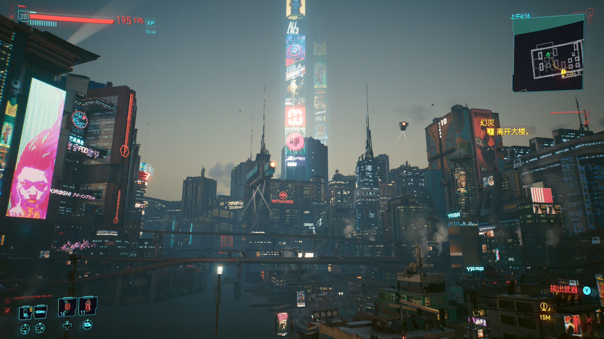

弑神
题目有些中二，内容是关于游戏。
2023/5/6 by DKZ

这个中二的题目来自之前观看《outer wilds》速通视频的感受。在这个游戏里玩家陷入了一个21分钟的时间循环，在这段时间里玩家需要对这个有着物理模拟的世界自由探索，登陆各种各样的星球，了解一个远古种族的知识，解开各种谜题，最终还原出故事的真相。由于是非线性的涌现叙事，玩家在这个游戏里有很高的自由度，游戏中破解谜题的手段也不唯一，甚至可以通过高超的驾驶技巧绕过某些谜题，这种行为是被允许的，你甚至还能因此达成某些成就（比如驾驶飞船登上太阳站）。我玩了40多个小时查了很多攻略才通关。在这个过程中看了其他玩家视角下的游戏过程，看到了很多运用游戏中的物理，比如引力弹弓，通过非常规的方式解谜。其中有两位速通玩家的视频震惊了我。 outer wilds 10 min DLC 其中一个在10分钟之内就通关了游戏，要知道我在第一个循环里都没有离开木炉星，然后花了40个小时的循环才了解了足够的知识通关，而实际上想要达成通关这个游戏的成就只需要十分钟。这就是涌现叙事的魅力，这可能只有游戏才能做到。他以一种令人意想不到的方法拿到了宇航服，跳过了游戏的教程部分。如果这个操作没有惊艳到你那么另一个挑战速通DLC全成就的方式绝对能让人目瞪口呆。他通过把飞船停在特定位置通过世界自行运转，拿到了宇航服开启了开挂模式。这个行为完全超出了常理，他拿到宇航服的地方是鹿人构建的梦境世界，当飞船撞进这个虚拟世界的时候带给我的感觉是就像是冲破了次元壁。更不要提他的其他操作，像把提灯放在木筏上顺流而下传递给未来的自己，利用探测器的机制在游戏里穿模，或者穿着宇航服登上太阳站。感觉就像是原地飞升，感觉我们玩的不是一个游戏。
速通玩家在其他游戏中也有，尤其是马里奥俄罗斯方块这些经典游戏。这些人通过不断的练习尝试，最后把世界纪录向前推进了几秒钟。费了这么大力气时间精力绝不是为了游戏里的一个排名那么简单，因为很有可能之前的世界排名就是他创造的。那么是为什么？这么做的意义在哪？可能是执念《李献计历险记》里那样；或者是突破自己，突破极限，像奥林匹克竞技一样；或者单纯就是我可以我想这么做；不需要什么意义，山就在那儿。我觉得都有道理，我不是速通玩家，甚至截然相反，我是一个作弊玩家，每每卡关我就试图用一些hack走捷径，试图避开这些无意义的重复尝试。但我还是想从另一个角度回答一下这个问题：我们在弑神，只因为我们是人类。
另一个我想回答一下的问题是机核的一个圆桌讨论，好玩是不是一款好游戏的必要条件？这个讨论引出了很多问题，像是gameplay是不是游戏所必须的？叙事和玩法如何平衡？如何评价一款游戏？游戏是什么？在这个讨论里试图扩大游戏的边界，然后把更多的东西囊括进去。试图摆脱自己的主观感受给予游戏一个客观的评价。我觉得还是挺有道理的，我是一个程序员，工作就是写gamgplay的部分，但同时我也患有电子阳痿，非常喜欢步行模拟器这类的作品，随着年龄增长，玩游戏更重视过主线，看剧情。这可能是一个自然的衰老过程，对于玩法的需求随年龄增长递减，可能是随着对世界的认知加深，玩的部分能学到的内容变少，童心和好奇心都在流失，不再玩游戏我觉得都是正常现象。
很少有游戏能照顾到所有的玩家，即便是《荒野大镖客2》这样被R星倾注大量资源和心血的巨作，也还是被很多玩家诟病，剧情上为了照顾多数人或是主流价值观而无法代入，玩法上缺少创新，甚至有些无聊。但无论如何这都是我玩过的最接近真实的游戏。在真实的世界中也不存在所有人都觉得好的东西，没有一套价值观可以在这个混沌的世界中畅行无阻。 说回玩法上，在这个游戏里面可以打猎钓鱼看风景，也可以杀人越货劫火车。好不好玩完全取决于你怎么玩。对于一个孩子来说一块石头一只袜子一滩稀泥都可以是好玩的玩具，可以脑补出规则，给玩具以生命，好不好玩完全取决于孩子在自己的想象里怎么塑造玩具。哪怕什么都没有手指头都可以玩一天。 所以我并不觉得好玩是好游戏的一个必要条件，我做过一个游戏唯一能够交互的就是长按着小人就会一直向前跑，好玩吗？不好玩，但是这个交互是和我想表达的执的概念是相匹配的。 但这个东西还算游戏吗？游戏是什么？游戏和电影绘画文字音乐这些艺术媒介的区别是什么？恰恰就是游戏能提供体验，能参与，能够对玩家行为给出反馈。这么说来gameplay又是游戏中最不可或缺的部分。但我不觉的游戏的目的是给玩家带来快乐，很多游戏的内核都是苦涩的，即便是想给玩家带来快乐的游戏，为了达到那个高潮也会给玩家设置种种困难，反复的折磨玩家。 所以我想把好和玩这两个字分开来，不用这一套好坏的评价。什么是好玩？什么是好游戏？把它解构，在某个子系统上给予专业的评价，把局部做到极致。这又有什么用呢？最后搞出来了一个缝合怪。不我们要做减法，找到玩法的核心。然后发现大多数游戏的核心玩法不过是一个 todo list，就像这该死的生活，糟心事一件接着一件，还要再继续吗？ 我觉得我做不出什么好玩的游戏了。我拿不出好的玩法，我已经不会玩了。那就试着做做剧情，写好的故事，去他妈的玩法。可我也没有生活，我太久没有爱过，我都记不得上次喝醉是在哪里了，瓦伦汀的酒吧？也许是吧。
让你的角色自己去生活，想想你喜欢的那些游戏，《缺氧》玩了有400个小时，有300个小时都在当黑心老板，另外那100个在测试什么稀奇古怪的东西，最后bug一堆都进了黑洞，看看它的论坛就是一个巨大软件项目的issue页面了。也许那是feature呢？玩家恰好能利用这些漏洞，也许这本身就是游戏的一部份。就像那些速通玩家一样，他们突破了游戏里的限制见到了他们的造物主。你就等着大吃一惊吧！
说的对强尼，来，喝完这杯，我们去干死重锤！
2023.4.30 于来生